RPL03:Señales en tiempo discreto
GARCIA MORALES PABLO
FERNANDEZ SANTANA VIVIANA ELIZABETH
2MV1
Contents
Objetivos
Manipulación básica de MATLAB
Gráficas de señales reales y complejas discretas
Transformación de señales discretas (escalamientos y traslaciones)
Calculo de energía y potencia de señales discretas
Introduccion
Escalamiento de señales Las operaciones de escalamiento horizontal y/o vertical sobre una señal f[n]tienen como consecuencia que se genere una nueva señal g[n] cuya gráfica precisamente es un escalamiento, horizontal o vertical de la gráfica de la señal "original". Si queremos generar una señal g[n] que sea el escalamiento horizontal de la señal f[n],b distinto de 0 y entero unidades escribiremos: g[n]=f[bn] Cuando 0< b <1 la gráfica resultante es una expansión horizontal respecto a la original. Si b=1 no hay escalamiento, la gráfica resultante es idéntica a la original. Ahora si b>1 la gráfica es una compresión horizontal respecto a la original. Si b=0 entonces la señal resultante es una constante (sería la evaluación de f en (0) que podría estar bien definida o no, eso dependerá de la forma de f si -1< b <0 la gráfica resultante se expande y se invierte horizontalmente respecto a la original. Si b= -1 la gráfica resultante solo se invierte horizontalmente respecto a la original. Cuando b<-1 la gráfica resultante se comprime y se invierte horizontalmente respecto a la original. Ejemplo
Desarrollo
1
function[fn]=func1(ohm,alf) fn=(r.^(n).*cos(ohm.*n))+(1i*r.^(n).*sin(ohm.*n)); end
2
n=-2:10;alf=0.9; func2(n,alf);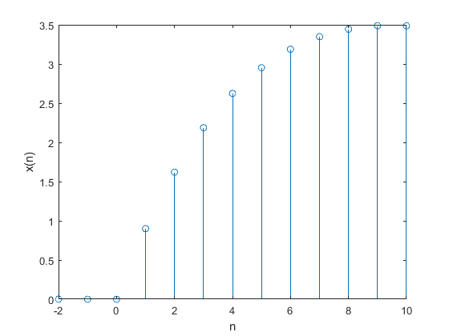
3
n=-2:20;r=1.1;ohm=0.5; func3(r,n,ohm);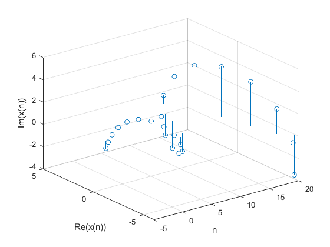 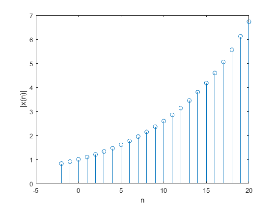 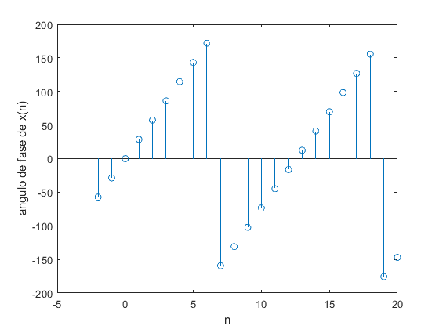
4
function[ene]=energiadis(x) sum=0; for n=-100:100 ene= (x.^2); end
5
x = @(n) n.*((n>=-3)&(n<=3)); n=-4:4; figure stem(n,x(n)) energiadis(x(n)) a=ans; energiat=sum(a)
ans =
0 9 4 1 0 1 4 9 0
energiat =
28
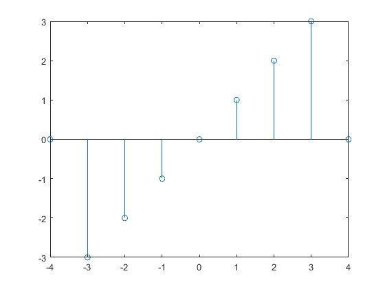 6
f = @(n) n.*((n>=0)&(n<3))+(-1.*n+6).*((n>=3)&(n<6)); n= -10:10; figure stem(n,f(n)); xlabel('n'); ylabel('x(n)'); grid; figure stem(n,f(-1*n)); xlabel('n'); ylabel('x(-n)'); grid; figure stem(n,f(n+6)); xlabel('n'); ylabel('x(n+6)'); grid; figure stem(n,f(n-6)); xlabel('n'); ylabel('x(n-6)'); grid; figure stem(n,f(3*n)); xlabel('n'); ylabel('x(3n)'); grid; figure stem(n,f(n/3)); xlabel('n'); ylabel('x(n/3)'); grid; figure stem(n,f(3-n)); xlabel('n'); ylabel('x(3-n)'); grid;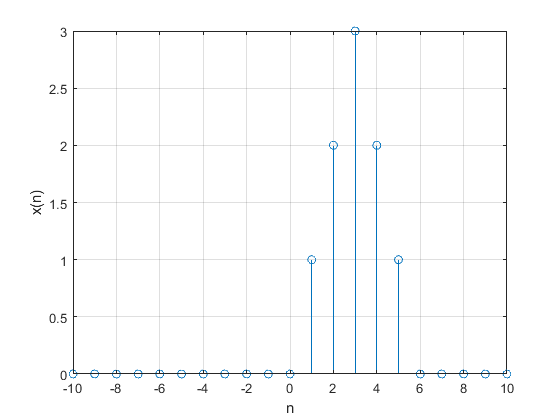 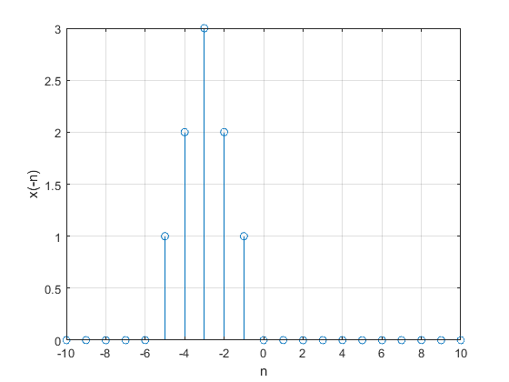 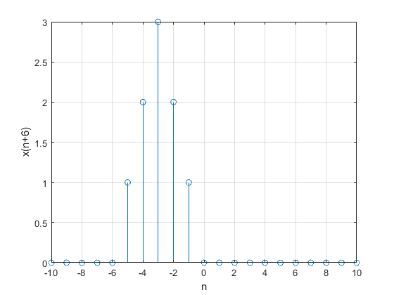 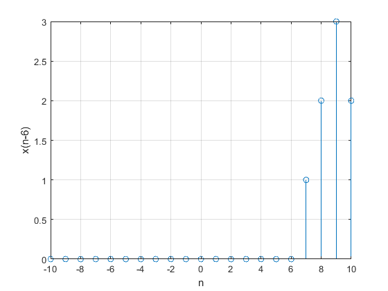 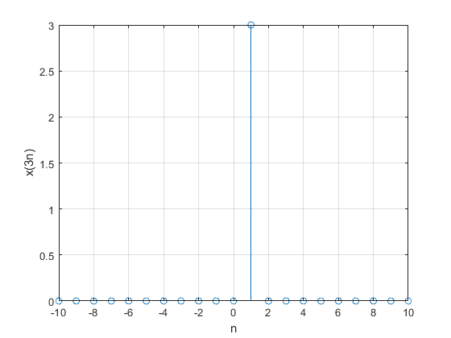 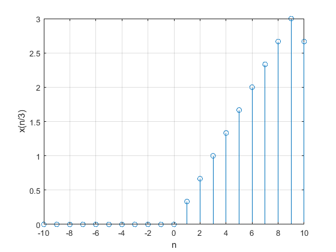 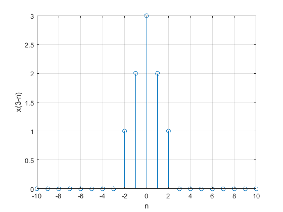
Referencias
B.P.Lathi, Linear Systems and Signals , Oxford University Press, 2005, New York
Rafael Martinez Martinez. (2018). Practica 3: Señales continuas. 29/10/18, de MATLAB Sitio web: http://rafneta.github.io/Practica3ASySNoviembre2018/Prac3ASySNoviembre2018.html
Danilo Š?epanovi?. (2010). Variables, Scripts, and Operations. 29/10/18, de IAP Sitio web: https://ocw.mit.edu/courses/electrical-engineering-and-computer-science/6-094-introduction-to-matlab-january-iap-2010/lecture-notes/MIT6_094IAP10_lec01.pdf